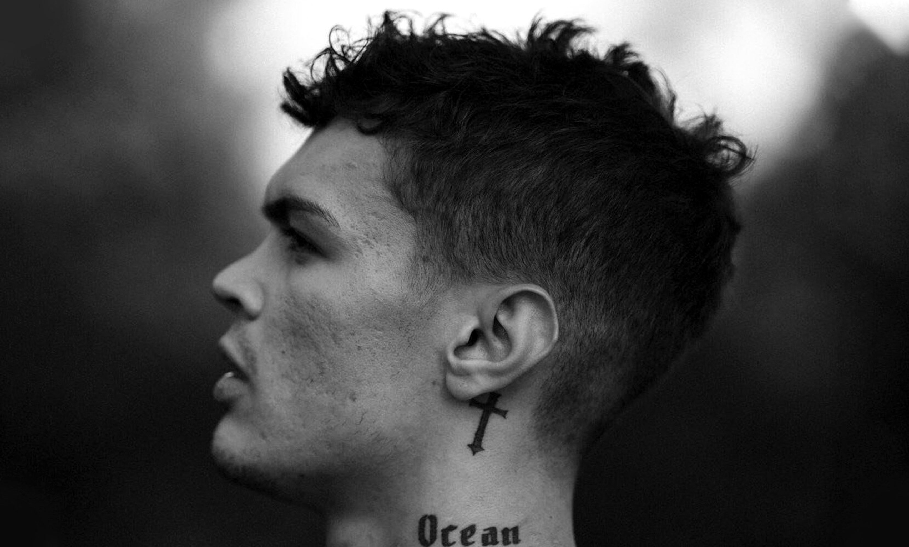

La musica di Bieber è principalmente pop, incorporando anche elementi R&B. Nel 2010, Jody Rosen della rivista Rolling Stone ha affermato che il contenuto della sua musica "offriva una delicata introduzione ai misteri e ai dolori dell'adolescenza: canzoni piene di romanticismo ma in particolare libere dal sesso stesso". Dopo il suo successo nel 2015 della traccia "Where Are Ü Now", Bieber pubblicò l'album ispirato all'EDM, Purpose, in collaborazione con Diplo e Skrillex, DJ Snake e Major Lazer.
Travolgente
È considerato dalla critica come uno dei migliori rapper del panorama italiano. Ha esordito nel 2005 con il mixtape autoprodotto Roccia Music I, il quale ha visto la partecipazione del collettivo Dogo Gang e di altri artisti appartenenti alla scena hip hop italiana. Il mixtape ha ottenuto un riscontro significativo nel panorama hip hop underground e lo ha portato alla firma di un contratto discografico con la Universal Music Group, con la quale nel 2008 ha pubblicato il primo album solista, l'omonimo Marracash. Nel 2013 ha fondato insieme al produttore Shablo l'etichetta discografica indipendente Roccia Music, che vedeva coinvolte figure affermate ed emergenti dell'hip hop italiano, tra rapper, produttori e DJ.
Poeta contemporaneo
È salito alla ribalta nel 2021 con i successi La canzone nostra e Mi fai impazzire, arrivati al vertice della Top Singoli italiana. Ha in seguito pubblicato il suo primo album Blu celeste, certificato quadruplo platino e trainato dai singoli Notti in bianco, Paraocchi e l'omonimo brano. Nel 2022 ha vinto il 72º Festival di Sanremo con il brano Brividi, in duetto con Mahmood, il quale entra in classifiche di vari paesi e lo porterà all'Eurovision Song Contest 2022.
Entusiasmante
Nonostante un avvio legato al rap puro con sonorità attuali, Rkomi si è presto proposto come esponente dell'indie rap. Nella sua musica propone spunti autobiografici, sfruttando la resilienza come tema chiave delle sue canzoni. Il disco Io in terra è stato spesso preso in considerazione come esempio di hip hop influenzato dai generi prog, funk ed altri, per via delle basi originali ed innovative (oltre alla batteria, compaiono il basso elettrico, la chitarra e la tromba). Con Ossigeno - EP, l'artista ha cominciato ad approcciare una versione più funk e pop del rap, stabilendo una nuova dimensione musicale con l'album Dove gli occhi non arrivano, caratterizzato da sonorità e compartecipazioni puramente pop.
Versatile
È salito alla ribalta grazie alla pubblicazione dell'album XDVR, inciso con la collaborazione del produttore discografico Charlie Charles, ottenendo un buon successo in Italia. Tale successo si è replicato con le uscite di Sfera Ebbasta (2016), Rockstar (2018) e Famoso (2020), il secondo dei quali ha permesso all'artista di divenire il primo italiano ad entrare nella top 100 mondiale della piattaforma di streaming Spotify. Al 2020 è risultato essere l'artista ad aver venduto più dischi in Italia nel decennio 2010-2019.
Trap